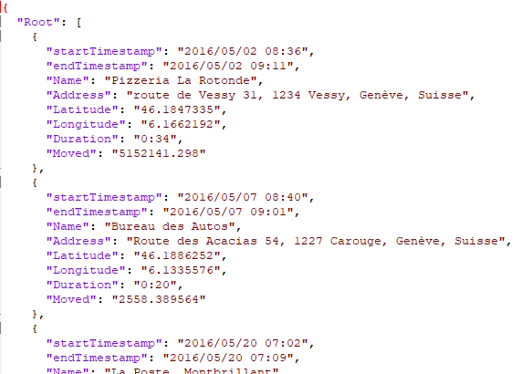
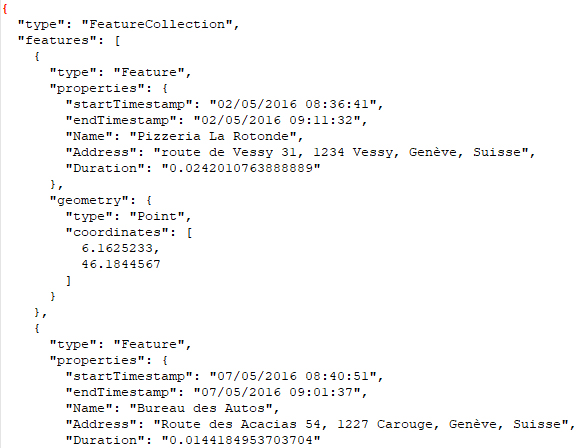
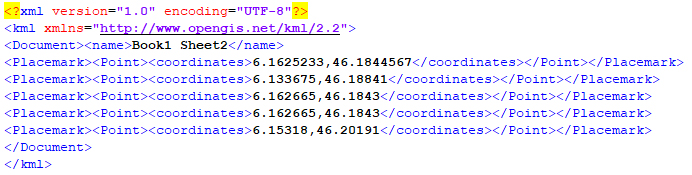
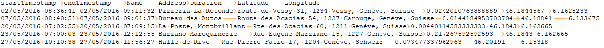

Exporting data
Data can be exported in several formats. The samples below were generated from takeout.json.Json
Compliant with RFC 8259
GeoJson
Compliant with RFC 7946
HTML
A self-contained HTML file that displays the map of the current worksheet, suitable for sharing, that can be viewed anyone in a browser.KML
Compliant with KML 2.2
Tabbed
Tab-separated fields without any quotes.
